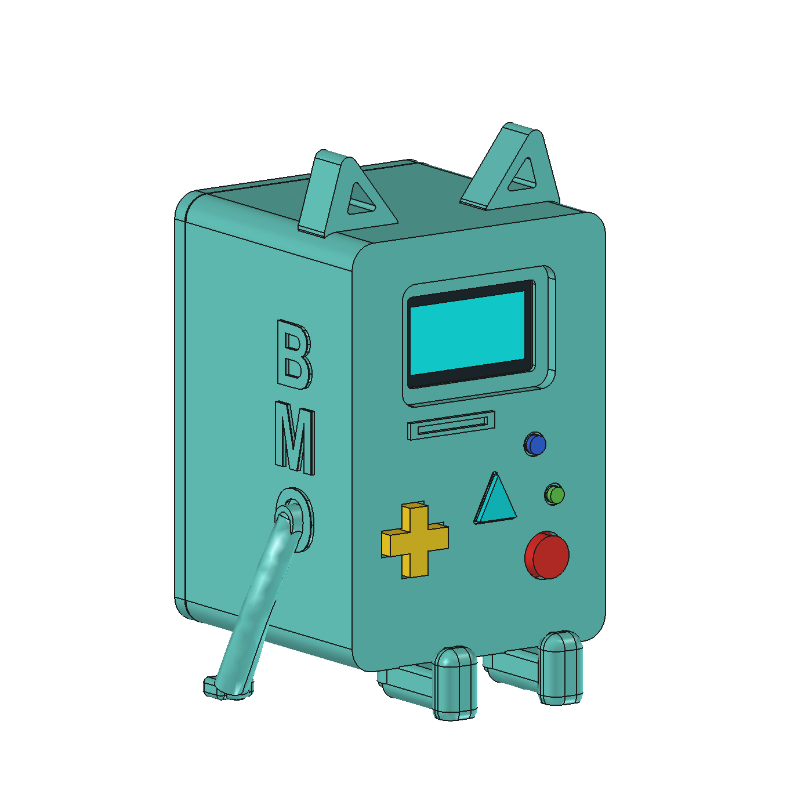
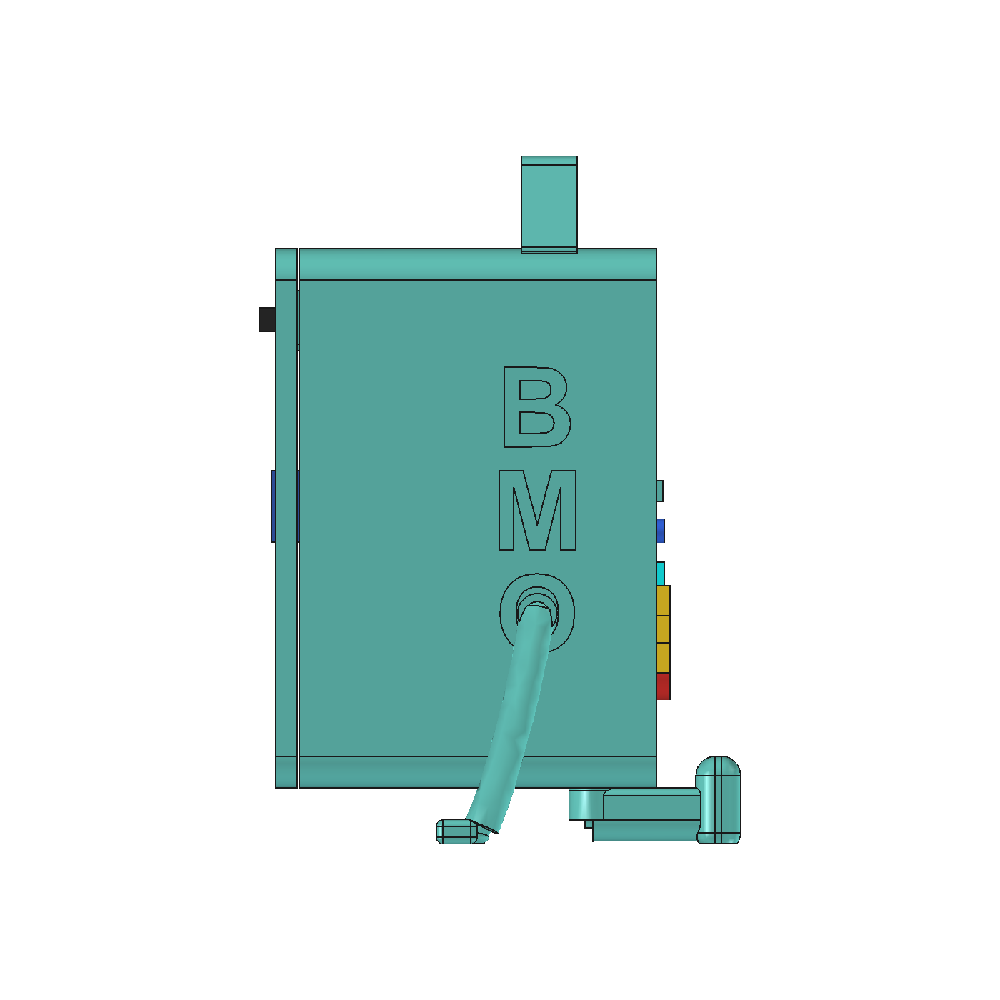
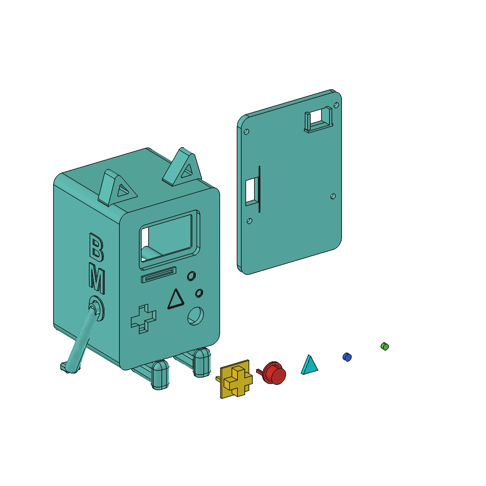
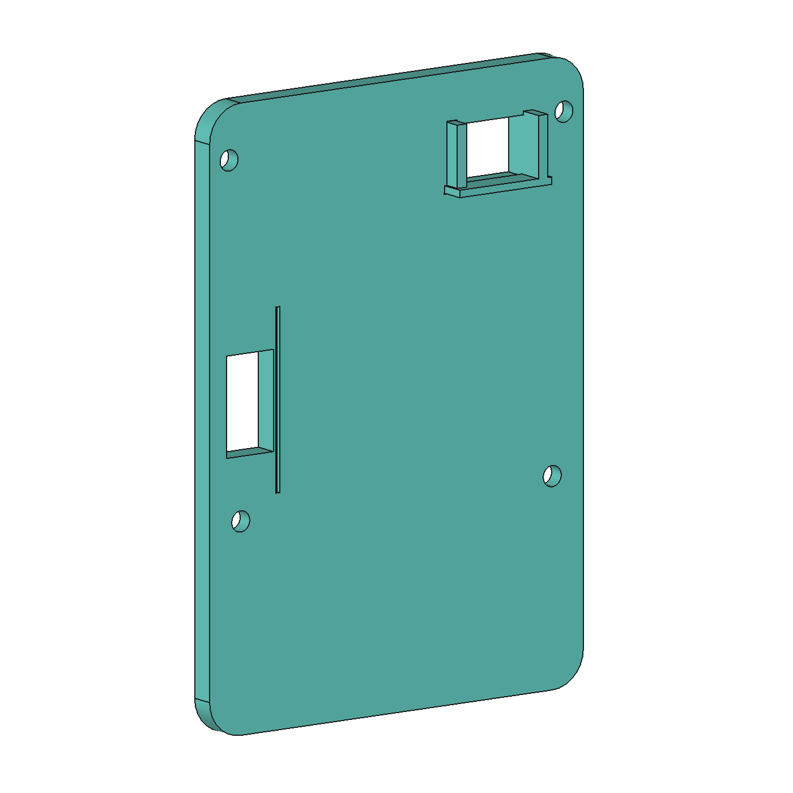

Ảnh xuất từ BMO_SIMPLE_BACK.FCStd. Đã bỏ thanh/khay giữ ESP32 và pin, bỏ bệ dưới; tay và khớp chân đã gia cố. Vị trí linh kiện giữ nguyên. Nắp có bốn lỗ vít thông, thân có lỗ mồi nhận vít.
Bộ in gồm 7 STL: thân và nắp mint, D-pad vàng, nút thật đỏ, tam giác cyan, nút trang trí xanh lam và xanh lá. STL không lưu màu; gán màu theo tên file và ảnh. Linh kiện điện tử trong ảnh không phải chi tiết in.
Chưa kiểm chứng lắp linh kiện thật, độ bền, cân bằng hoặc bắt vít thực tế. Xem README_VI.txt trong bộ gửi thợ để biết cách nhập các vùng màu cùng tọa độ.



